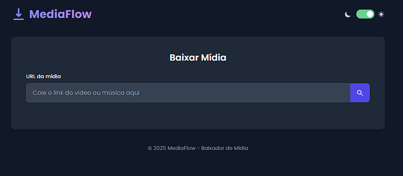

06
Financeiro App
Scripts que leem extratos do Nubank e PicPay e calculam faturamento mensal, mais app mobile e desktop de acompanhamento financeiro.
07
MediaFlow
Web app para baixar vídeo e áudio sem anúncios, com suporte a múltiplas resoluções via FFmpeg.

08
Robô de Diários OAB
Robô que pesquisa publicações por número de OAB em diários oficiais, gera relatório em PDF/HTML/CSV e evita alertas duplicados.
09
Cervi e Gabriel Advogados
Site institucional para escritório de advocacia, com autenticação e banco de dados próprios. Entregue como projeto de cliente.
10
Spacefy
Rede social para compartilhar cifras musicais sincronizadas, estudo aplicando Spec Driven Development do início ao fim.
11
Cidade Hype
Backend e API de administração para um jogo de construção de cidades: loja, eventos, atualizações e sistema de bugs.
12
PyZapZure
Ferramenta de automação de envio de mensagens no WhatsApp via Selenium.
13
SecSpec Verify
Skill de IA para agentes rodarem auditorias de segurança automatizadas em projetos baseados em OpenSpec.
14
StudioFlow
App construído com Google AI Studio integrando a API do Gemini, com autenticação e dados via Firebase.